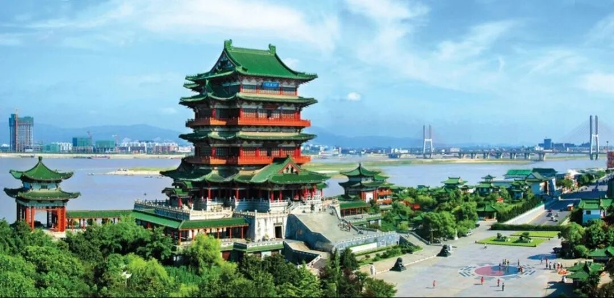
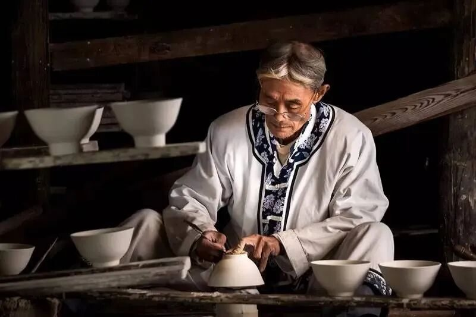
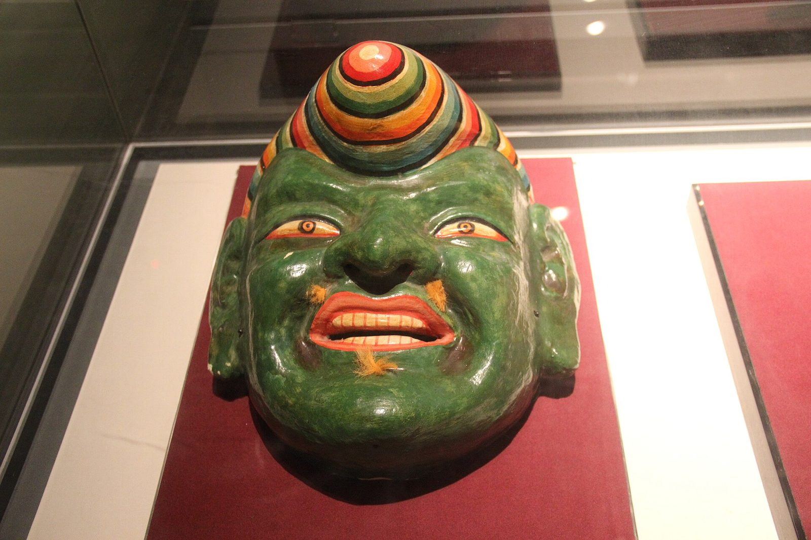
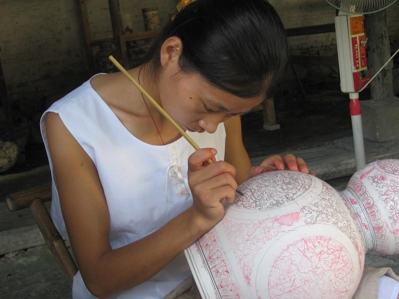
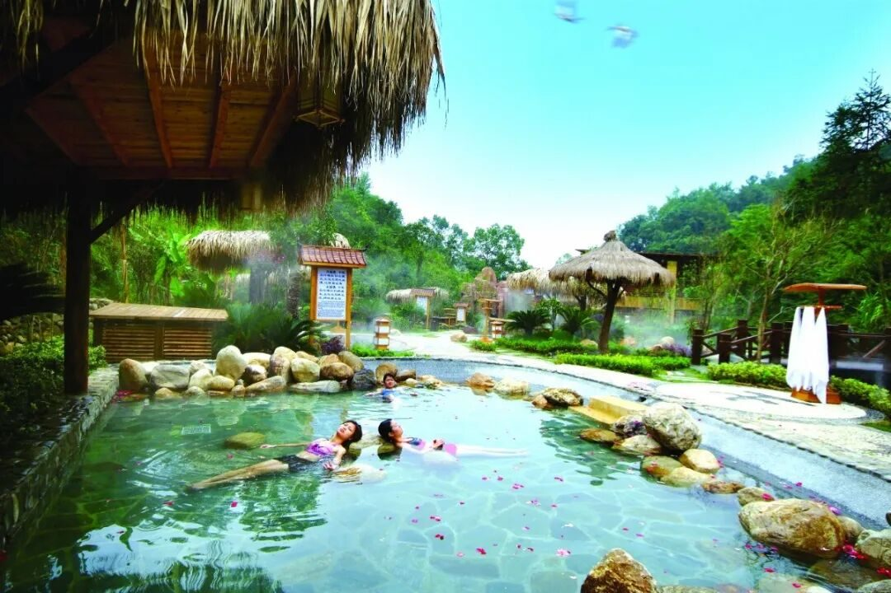
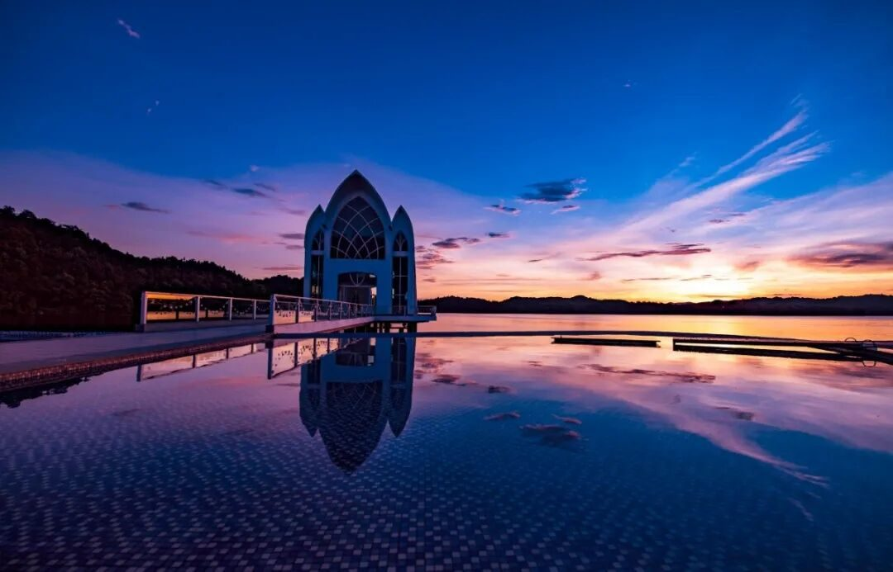

登高滕王阁
欣赏的不只是风景，更是文化，与历代圣贤豪杰来一次跨越千年的时空对话。
Jiangxi · A Scroll of Six Beauties
为什么一定要来江西？爱上一个人或许没有理由，但想去一个地方旅行，肯定是有理由的。 也许你会为了一座楼、一片山、一湖水，或一碗热汤而出发。下面，请听君讲江西—— 从山美、水美、人更美，到民俗江西、产业江西与地道江西味，六美俱全，带你读懂这片红土绿洲。

与王勃、苏东坡、汤显祖来一场跨越千年的对话
奇秀甲天下的悠然假期，半部中国文化史的积淀
漫步古旧石板路，沉醉于古老幽静的梦里水乡
乘竹筏看千年未解的悬棺升棺表演

China 与"中国"同名，窑火千年不熄
国际观鸟胜地，把"鸟的天堂"装进镜头
Chapter 01 / Six Beauties
Mountain · Water · People · Folk · Industry · Flavor
把江西拆成六件展品：山是骨，水是脉，人是魂，俗是烟火，业是筋骨，味是乡愁。 逐格展卷，每一格都通向一条完整的支线。
 01山美MOUNTAIN庐山、井冈山、三清山、龙虎山……一山有一山的性格，奇秀甲天下。展卷细看 →02水美WATER中国第一大淡水湖鄱阳湖、仙女湖、庐山西海，碧波万顷，候鸟翩跹。展卷细看 →03人更美PEOPLE欧阳修、王安石、陶渊明、晏殊……人杰地灵，文章节义之邦。展卷细看 →
01山美MOUNTAIN庐山、井冈山、三清山、龙虎山……一山有一山的性格，奇秀甲天下。展卷细看 →02水美WATER中国第一大淡水湖鄱阳湖、仙女湖、庐山西海，碧波万顷，候鸟翩跹。展卷细看 →03人更美PEOPLE欧阳修、王安石、陶渊明、晏殊……人杰地灵，文章节义之邦。展卷细看 →
04民俗江西FOLK瓦罐汤、三杯鸡、粉蒸肉、藜蒿炒腊肉，鲜辣乡愁都在这一口里。展卷细看 →
05产业江西INDUSTRY赣傩傩舞、采茶戏、千年窑火与徽州晒秋，烟火人间里的非遗长卷。展卷细看 → 06地道江西味FLAVOR千年瓷都、中国药都、赣南脐橙与新兴 VR 航空，物华天宝实业兴赣。展卷细看 →
06地道江西味FLAVOR千年瓷都、中国药都、赣南脐橙与新兴 VR 航空，物华天宝实业兴赣。展卷细看 →Chapter 02 / Ten Reasons
Why Jiangxi, in ten frames
爱上一个人或许没有理由，但想去一个地方旅行，肯定是有理由的。下面九个，加最后一个藏在味道里的理由。
欣赏的不只是风景，更是文化，与历代圣贤豪杰来一次跨越千年的时空对话。
"奇秀甲天下"，半部中国文化史的积淀，涤荡心灵，迷于万年前冰川运动。
粉墙黛瓦的徽派民居，市井烟火气的民宿，每走一步都仿佛遁入古老梦乡。
乘竹筏至仙水岩，看千年未解的古越人悬棺升棺表演，思索古人之智慧。
带着孩子游学千年瓷都，探寻陶瓷前世今生，品味流传千年的瓷器故事。
誉满天的国际观鸟胜地，每年数十万只候鸟停落，是摄影爱好者的天堂。
在武功山高山草甸撑起帐篷看繁星，或去横峰葛源数着繁星进入良辰美梦。
明月山温汤、铜鼓汤里、庐山富氡温泉，浑身轻盈，一解忧劳积虑。

泛舟仙女湖、明月山摸月老石，再坐"南昌之星"摩天轮，幻想到天荒地老。

南昌瓦罐汤、江西拌粉、宁都三杯鸡、莲花血鸭……鲜辣乡愁，专治各种水土不服。 最后一味理由，写在碗里。
去尝尝地道江西味 →短片里，十帧画面把江西从北到南走了一遍：滕王阁的落日、庐山的云海、婺源的晒秋、鄱阳湖的候鸟。
Chapter 03 / By the Numbers
Eleven cities, one scroll
11 个设区市沿着赣江铺开，从长江之滨的九江到南岭脚下的赣州。这轴图不为精确，只为让你一眼看懂江西的骨架。
0处
世界遗产
WORLD HERITAGE
0个
5A 级景区
5A SCENIC AREAS
0座
国家历史文化名城
HISTORIC CITIES
0个
设区市
PREFECTURE CITIES
邻省 5A 级景区数量对比 单位：个
世界文化景观遗产，云雾、飞瀑与别墅群。
点一枚印章，换一处江西地标。
Chapter 04 / Leave a Message
Write a line, get a seal
写下你与江西的一句话。留言会盖上一枚朱印，留在这轴长卷的末尾。